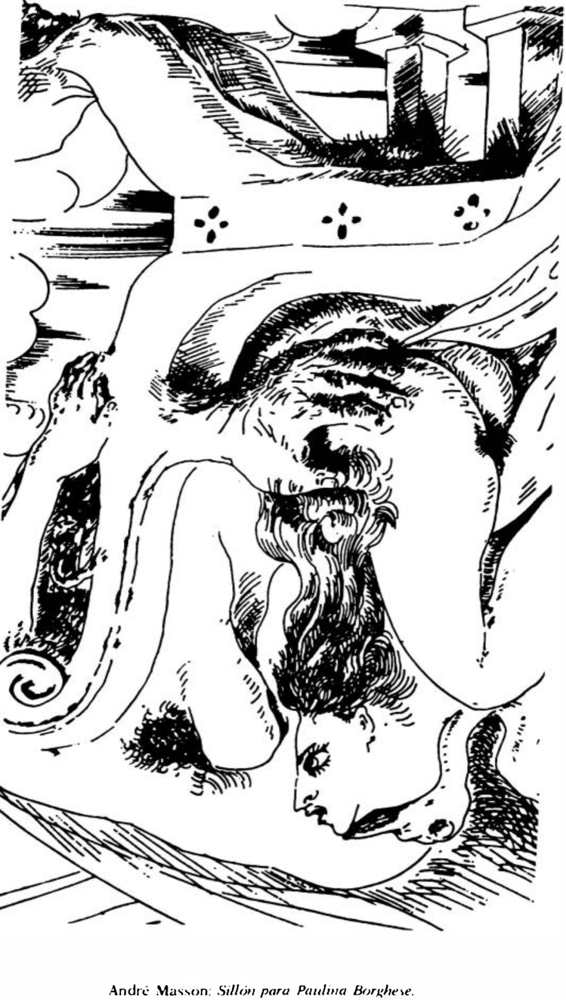

Lágrimas de Eros · Obra 93 de 124
Sillón para Paulina Borghese
André Masson

Un cuerpo de mujer convertido en sillón. El título alude a Paulina Borghese, hermana de Napoleón. Bataille lo acompaña de una nota sobre Masson: dice que sus primeros dibujos eróticos son de justo después de la guerra y que es de los que mejor expresan la dimensión religiosa del erotismo.
Lo que hace que destaque
Un cuerpo de mujer convertido en sillón. El título alude a Paulina Borghese, hermana de Napoleón. Bataille lo acompaña de una nota sobre Masson: dice que sus primeros dibujos eróticos son de justo después de la guerra y que es de los que mejor expresan la dimensión religiosa del erotismo.
Contexto histórico
Sin fecha ni sede; no aparece en catálogos en línea. Que Paulina Borghese fuera hermana de Napoleón no está en las fuentes citadas.
Autoría y procedencia
André Masson (1896-1987), pintor y dibujante francés, pionero del dibujo automático y uno de los artistas más intensos del surrealismo.
En los libros
Las lágrimas de Eros, de Georges Bataille · Lámina de la p. 170
«El imponente erotismo de André Masson tiene muchas afinidades con el de William Blake. Masson era un ferviente admirador de Sade.»Andre Masson's imposing eroticism has many affinities with that of William Blake. Masson was a fervent admirer of Sade.Georges Bataille, «Las lágrimas de Eros» (1961), traducido al español de la ed. inglesa de City Lights (1989), p. 170
Ficha pendiente de contrastar con fuentes académicas.